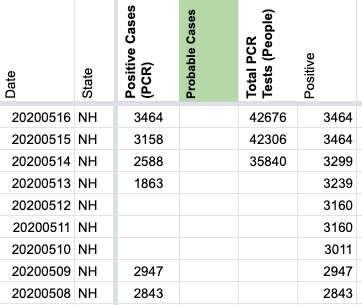
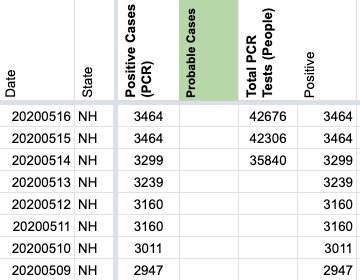
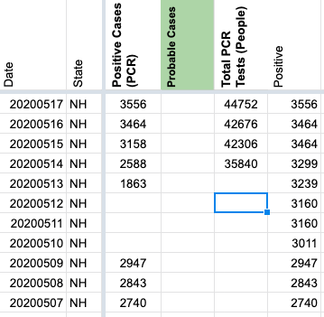

[NH] PCL Historicals and Data Definitions
Issue number 726
brianskli opened this issue on August 3, 2020 at 8:59 am
Labels Historical Data not stale PCL/SVP Historicals Missing Data
State or US: New Hampshire
Describe the problem 5/13 Positive Cases is lower than surrounding days Screenshots definitions for positives alternate between “presumptive-positive and CDC confirmed” and “CDC confirmed” only (e.g. 5/10-13), requiring review, especially before 4/29
Link to data source https://www.nh.gov/covid19/ http://covid-tracking-project-data.s3-website.us-east-1.amazonaws.com/state_screenshots/NH/
Comments
Small note, looks like the 5/14 number came from a “Weekly Report” that data entry was using for hospitalization numbers. Unfortunately this was an old value from more than a week prior, but after the mistake the previous day, perhaps it seemed plausible since it was an increase.
After discussion on the backfill team, we decided to be conservative and repair the clearly incorrect data from 5/10 through 5/15 in the Positive Cases (PCR) column but not copy the longer history of the Positives column.
Before: 
After: 
 Spent a while looking at this. Some preliminary conclusions:
Under these circumstances, I think ideally we would use the official NH data for both Positive Cases (PCR) and Positives, but our backfill policy is not to take revised data like this since it’s not “forward compatible” with future data entry.
Given that, I think the right thing to do is repair and extend the Positive Cases (PCR) column by copying over the data from Positives going all the way back to early March. Since it so closely tracks the state confirmed positive case data I think we can conclude the dashboard was reporting confirmed positives throughout.